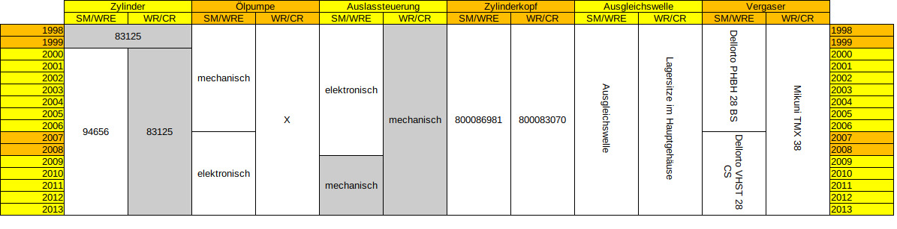

Übersicht des Motors (125er ab 1998)
Einleitung
Der Motor hat im Modelljahr 1998 eine große Aktualisierung bekommen und wurde dann fast unverändert bis zum Produktionsstopp 2013 gefertigt. Der Motor unterscheidet sich zwischen den verschiedenen Modellen nur geringfügig und sie sind untereinander kompatibel. Allgemein handelt es sich um einen flüssigkeitsgekühlten Einzylinder-Zweitaktmotor mit Membraneinlass, Schieberauslasssteuerung und 6-Ganggetriebe.
Übersicht
Drosselung
Die Drosselung der Husqvarnas geschieht rein mechanisch. Je nach Baujahr und Modell wird die Drosselung durch den Vergaser, Krümmer, Zylinder und den Zylinderkopf erreicht.
Eine Drosselung ist nötig, um Führerscheinklassen und Emissionswerte einzuhalten.
Zylinder
Für den Motor der Husqvarna gibt es drei Zylinder, welche Unterschiede in den Steuerzeiten und der Verdichtung aufweisen. Diese sind aus Aluminiumguss und haben eine Nikasillaufbahn. Sie haben sieben Überströmer und zwei Auslasskanäle.
Nr. 83125:
Dieser Zylinder ist der, welcher auf maximale Leistung ausgelegt ist. Er wurde bei allen WR & CR verbaut. Bis zur Einführung des Drosselzylinders wurde er auch bei den 1998er & 1999er WRE und SM verbaut.
Nr. 94656:
Dieser Zylinder wurde bei der WRE und SM ab 2000 verbaut und ist leicht gedrosselt. Verändert sind die Steuerzeiten und die Kompression. Der Effekt ist, dass der Motor nicht so weit ausdreht und eine etwas geringe Spitzenleistung erzeugt. Allerdings steigt dadurch die Kraft in den unteren Drehzahlen auch ein wenig.
Nr. H1115? (144ccm-Kit):
Dieser Zylinder erzeugt eine Hubraumvergrößerung auf 144 ccm. Dadurch soll keine höhere Spitzenleistung erreicht werden, aber die Leistungsentfaltung ist deutlich gleichmäßiger und damit ist auch die Leistung in den unteren Drehzahlen deutlich höher. Beim Umrüstung muss unbedingt darauf geachtet werden, dass die Auslassschieber weiterhin einen ausreichenden Abstand zum Kolben haben. Des Weiteren gibt es für diesen Zylinder auch einen Zylinderkopf mit angepasstem Brennraum.
Der Zylinder wurden in einem Kit zum Nachrüsten vertrieben und bei den späteren Modellen der CR beim Kauf zusätzlich mitgegeben. Die meisten Zylinder, welche aktuell im Umlauf sind, sind allerdings nachbearbeitete 125er Zylinder.
Zylinderkopf
Die originalen Zylinderköpfe der Husqvarna sind aus Aluminiumguss. Die drei originalen unterscheiden sich durch die Brennraumform, Verdichtung und Anschlüsse.
Nr. 800086981:
Dieser Zylinderkopf ist etwas gedrosselt und erzeugt weniger Kompression. Des Weiteren ist er der einzige mit einem Gewinde für ein Thermometer, allerdings auch der einzige ohne Anschluss für die Rahmenverschraubung. Er wurde bei allen WRE und SM ab 1998 verbaut.
Nr. 800083070:
Dieser Zylinderkopf wurde bei allen WR & CR ab 1998 verbaut. Er hat eine erhöhte Kompression und ist auf Spitzenleistung ausgelegt. Des Weiteren hat er einen Anschluss für die Verschraubung am Rahmen. Er hat kein Gewinde für ein Thermometer.
Nr. 8000H1116 (144ccm):
Dieser Zylinderkopf basiert auf den Nr. 800083070, aber hat einen angepassten Brennraum für den 144ccm-Zylinder.
Dritthersteller:
Anbieter für zweigeteilte, gefräste Zylinderköpfe sind VHM, BUD und CP-Racing-Parts. Für diese sind verschiedene Brennräume für unterschiedliche Einsatzzwecke erhältlich.
Krümmer
Für die Husqvarna gibt es etliche Krümmer, welche mit unterschiedlichen Drosselscheiben oder sogar Katalysatoren versehen sind.
CR:
Da die CR keine Straßenzulassung hat und keine Abgaswerte erfüllen muss, wurde diese immer mit einem ungedrosselten Krümmer ohne Katalysator ausgeliefert.
WRE & SM
Von 1998 bis 2006 wurde ein Krümmer mit zwei Drosselscheiben und einem Trichter verbaut. Die größere Scheibe mittem im Resoanzkörper drosselt auf 15 ps und die zweite kleinere im Auslassbereich auf 12 ps. Der kleine Trichter ist auch im Auslassbereich und drosselt auf 80 km/h. Letztere war führerscheinbedigt für den deutschen Markt.
Ab 2007 wurde ein Krümmer mit Katalysator, Sekundärluftsystem und Beinschutz verbaut. Weiterhin sind die Drosselscheiben verbaut. Der Krümmer endet gerade nach dem Resonanzkörper und hat dort keinen Knick nach oben.
WR:
Der Krümmer der WR entspricht den der WRE und SM, bis auf, dass die Leistung noch weiter gedrosselt ist. Zumindest die späteren Baujahr sind mit 5 ps eingetragen. Im Ausland ist dies womöglich anders.
Dritthersteller:
Es gibt etliche Dritthersteller, welche Krümmer für die Husqvarnas herstellen. Diese sind alle ungedrosselt, ohne Katalysator und auf den 38er Vergaser ausgelegt. Viele von diesen sind sehr dünnwandig, was nicht nur für ein Gewichtsersparnis sorgt, sondern auch für den charakteristischen rohen Zweitaktklang sorgt.
Eine Besonderheit stellen die Giannelli- und Arrow-Krümmer da, denn diese sind für die 28er Vergaser mit offener Leistung ausgelegt. Des Weiteren haben sie eine Schein-Zulassung. Auf ihnen ist eine E-Nummner eingeprägt. Diese E-Nummer ist tatsächlich aber nur für die zugehörigen Endschalldämpfer gültig.
Vergaser
Die Husqvarna wurden mit drei verschiedenen Vergasers ausgeliefert.
Mikuni TMX 38:
Dieser Flachschiebervergaser wurde an allen WR & CR verbaut. Er ist auf Spitzenleistung ausgelegt.
Dellorto PHBH 28 BS:
Dieser Rundschiebervergaser wurde an den WRE und SM von 1998 bis 2006 verbaut. Er ist maßgebliche für die Drosselung verantwortlich.
Dellorto VHST 28 CS:
Ab 2007 wurde dieser Flachschiebervergaser an WRE und SM verbaut, die elektrische Ölpumpe einführen zu können. Auch er drosselt maßgeblich.
Auslasssteuerung
Die Auslasssteuerung sorgt dafür, dass Leistung vor dem Resonanzbereich deutlich gesteigert wird. Das geschieht bei den Husqvarnas, indem zwei Schieber vor dem Resonanzbereich die Auslasskanäle stark verengen. Es gibt zwei Varianten, wie diese gesteuert wird. Alle Teile im Zylinder selbst, bleiben dabei jedoch gleich.
"Die Elektrische":
Bei den WRE und SM bis 2008 wird die ALS über zwei Bowdenzügen über einen am Rahmen befestigten Stellmotor gesteuert. Nachteile sind eine Verzögerung, Erfordern einer Batterie und Unzuverlässigkeit. Diese Variante lässt sich einfach blockieren, indem sie abgesteckt wird und der Stellmotor manuell auf die gewünschte Position gedreht wird. Warum das wenig Sinn macht, wenn der Stellmotor nicht gerade defekt ist, ist hier gleich beschrieben.
"Die Mechanische":
Bei allen WR & CR und allen WRE & SM ab 2009 wird die ALS mechanisch über den Kupplungsdeckel gesteuert. Diese Variante kann theoretisch nachgerüstet werden, da der Lagersitz im Motorgehäuse auch bei den anderen Modellen vorhanden ist. Bei diesen ist er jedoch meist von der Ölpumpe in Verwendung - der passende Kupplungsdeckel wird benötigt.
Wenn die ALS auf offen blockiert ist, ist der Krümmer auch in den niedrigen Drehzalhen sehr laut und der Motor läuft schlecht. Es liegt deutlich spürbar weniger Leistung an und der Motor neigt zum stottern. Ab dem Resonanzbereich läuft alles wie normal.
Wenn die ALS auf geschlossen blockiert ist, läuft alles bis zum Resonanzbereich wie gewohnt. Ab dem Resonanzbereich stottert der Motor jedoch nur noch und erhöht die Drehzahl nicht weiter. Somit kann beispielsweise eine WRE mit entdrosseltem Krümmer unter Vollgas gerade so circa 100 km/h erreicht werden.
Ausgleichswelle
Um die Laufruhe des Motors erheblich zu erhöhen wurde bei WRE und SM eine Ausgleichswelle verbaut. Der Nachteil dieser ist das trägere Hochdrehen des Motors. Durch die höhere Schwungmasse ist auch die Standdrehzahl niedriger als ohne.
Da die WR und CR das gleiche Motorgehäuse haben, sind hier trotzdem die Lagersitze vorhanden. Allerdings haben die Kupplungsdeckel der WR und CR nicht die Lagersitze.
Ölpumpe
Bei den Modellen WRE und SM wurde eine Ölpumpe verbaut, um den Alltag zu erleichtern.
1998-2006:
In der ersten Generation ist die Ölpumpe mechanisch und in einem für die Modelle eigenen Kupplungsdeckel verbaut. Die Ölpumpe sitzt dort anstelle der mechanischen Auslasssteuerung und verwendet deren Lagersitz im Gehäuse. Ein Vorteil ist, dass sie einfach verstellt werden kann.
Der elegante Weg, diese Ölpumpe abzuklemmen, ist, das Plasikzahnrad von der Welle der Ölpumpe zu nehmen. Dafür muss der Kupplungsdeckel abgenommen werden.
2006-2013:
Die Ölpumpe der späteren Baujahre ist elektrisch und sitz nicht im Motor. Sie ist flexibler als die mechanische, denn sie ist nicht starr an Drehzahl und Gas gekoppelt, sondern elektrisch gesteuert. Unter Anderem auch durch einen TPS-Sensor.
Zündung
Die Modelle der Husqvarna haben unterschiedliche Zündungen, die auf den jeweiligen Einsatzzweck angepasst sind.
Die CR hat eine sehr leichte und sehr schwache Zündung. Dadurch kann der Motor schneller hochdrehen, aber die Standdrehzahl ist höher und es kann fast kein Licht betrieben werden.
Die WRE und SM haben eine schwere aber starke Zündung, um die viele Elektronik und Batterie der Modelle zu versorgen. Dadurch dreht der Motor langsamer hoch, aber die Standdrehzahl kann niedriger sein.
Die Zündung der WR befindet sich in der Mitte.